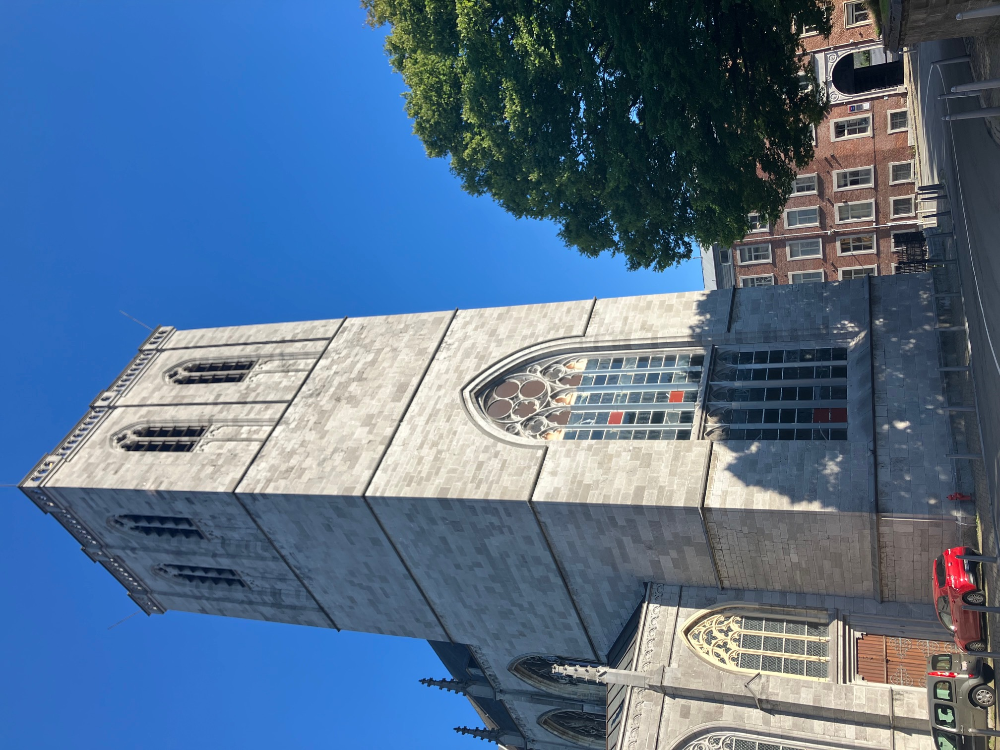

Daily Stats*
| Distance |
99.6 km |
| Time |
4:59:08 h |
| Avg. Speed |
20.0 km/h |
| Max. Speed |
36.9 km/h |
| Avg. Heart Rate |
132 bpm |
| Uphill |
650 m |
| Downhill |
561 m |
| Avg. Temperature** |
22.0 °C |
Elevation profile [m]
Slope profile [%]
*measured by Garmin Forerunner 945 & Sigma ROX 4.0
**measured at the lower back
Daybook
After the demoralizing ride from Ghent to Brussels, today's leg of the journey should take me about 100 km further to Liège. This route, with an elevation gain of more than 600 meters from many smaller ascents and descents, was planned to be a preparatory ride on the upcoming two-leg way back through the Eifel. Even more importantly: after yesterday, the general mood should turn positive again!
Feeling a little more rested — though still not back to 100% — I swung myself onto the bike at around 11 am after visiting the center of Brussels (see my last post). Today, the weather conditions were outstanding, with blue skies and sunshine at around 20°C. The first part of the route took me through Brussels, past construction sites and awkward traffic junctions, and across a number of suburbs (Sterrebeek, Moorsel, Leefdal, Bertem, etc.) all the way to Leuven. You could say it was a variety-packed ride, given the changing terrain conditions, but I would have preferred the smooth asphalt that morning ;-) Nevertheless, I reached Leuven with an average speed of 19 km/h and my legs feeling good, so I'm not about to complain :-) On the outskirts of Leuven, near the Abdij van Park (see first impression), I met another cyclist who told me that a professional bike race would be passing through Leuven that afternoon. Well, unlike the Benelux Tour, I would probably miss the finish line this time ...
After passing Boutersem and Tienen, I finally approached the approximately 40 km long series of ascents and descents along the N3. On the one hand, this two-hour section should have been easy to ride, as there were no turns, a distinct bike path was marked, and there weren't many other cyclists on the road. On the other hand, the road was mostly unprepared and bumpy, and the continuous alternation between 200 meters of climbing followed by 100 meters of flat or descending terrain was physically and mentally challenging, which is why I compare this section with a (small) roller coaster. Still, I probably underestimated the long straight ride, because along the route there were relatively few places to stop, such as supermarkets or shady spots along the edge of the bike path. Instead, the surroundings seemed rather “parched,” with restaurants/pubs by the roadside being mostly closed, and as soon as a store appeared to be open (or advertised 24/7 opening hours), it usually didn't look very appealing. Either way, the hunt for a decent supermarket got slightly out of hand, and I rode ... and rode ... and rode ... and rode all the way to Liège without taking a single break! Okay, the last few climbs hurt a little at the end, but every bike tour needs those torturous moments :-) For my personal record book: the longest distance I have ever cycled without a break (i.e., getting off the bike to eat snacks and drink fluids) is now 99.6 km! Many thanks, glucose, without you I might not have reached that success :-)
After almost five hours, I arrived at my accommodation in good condition. There shouldn't be any bedbugs here, so I'm going to say good night and get some well-deserved sleep ;-)
Impressions
 Abdij van Park in Leuven
Abdij van Park in Leuven
Entering the province of Limburg near Sint-Truiden
Reaching the city of Liège

St. Martin's Basilica in Liège
Window view of the houses in Liège